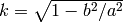

Welcome to Chiron’s documentation¶
In the current release, Chiron has two modules, Topology and Diagrams, avaiable in Chiron namespace. There are also several general purpose functions for visualizing Chromatin Conformation Capture Data, particularly, rainbow diagrams and loop diagrams along arc.
Example loop diagram:
Topology:¶
Module containing the topological analysis functions in Chiron for genus computation of chromatin links (specific interactions) as input data (Nx2 each row is [p1, p2] for link origin and destination in genomic positions.
-
chiron.topology.computeGenus(Data, gap=65536)¶ Main function to compute the genus given Data (list of links, N x 2 cotacting pairs of genomic positions).
Creates a graph G to compute the number of connected components and genus. First consider the case of no coincident ends for loop origins and terminations:
Then each end in the link list would split into two, “real” (r) and “ghost” (g) where address of ghost on the real line is greater than address of the “real”.
Again, in the absence of coincident ends for each link:
- The left ends “real” node shares an edge to the right end’s “ghost” node
- The left ends “ghost” node shares an edge to the right end’s “real” node, exhausting edges correspoding to links
- Along the real line, only “ghost” nodes connect by edge to “real” nodes, in linear order, and in consecutive pairing along the real line (backbone)
- Count the number of original loops = P (before creating ghosts). Call it P
- Count the number of loops (connected components) in the real + ghost graph, call it L
- genus
Now coming to resolving coincident ends in a manner that introduces no new crossings and doesn’t increase genus:
- Coincident ends (with n link originating or terminating) will have to be split into n real and n ghost nodes
- This splitting has to be done in an order such that the splitting itself does not create new link crossings.
Need to have a strategy for creating nodes such that points are easily ordered.
Strategy:
- Index all original link ends (nodes of G) by large even integers
- Create ghosts on large odd numbers
- Introduce new real nodes for coincident points in between these large even numbers
- Ghosts’ addresses are always s2 (here 1) greater than reals
- gap/s1 (s1 is an option in splitAndModify() function) is the region within which all coincident ends are resolved, increase it if there are too many coincident ends
Args:
- Data:
- Nx2 link data
- gap:
- Gap between addresses of nodes corresponding to the ends of links
- Returns:
- genus:
- computed genus
- G:
- networkx graph for computing genus
- LoopData:
- The list of edges corresponding to mapping of links
- backboneData:
- The list of edges corresponding to mapping of connectivity along the genome
-
chiron.topology.computeGenusLengthScales(LinkDataAll, powers=array([[ 6. , -inf], [ 6.5, 0. ], [ 7. , 0. ], [ 7.5, 0. ]]), overlapping=False, compute_randomize=False, num_randomize=10)¶ Computes genus at different lengthscales, returns two dicts, of genus and of counts of loops found in windows of lengthscale steps.
- Args:
- LinkDataAll:
- Nx2 links, rows (p1,p2)
- powers:
- log10(length scales), first row is long distance scale of link sizes, second column is short distance scale, analysis is for pairs (rows)
- overlapping:
- Binary, if true creates windows that overlap one-half window size
- compute_randomize:
- Binary, whether to randomize links and compute genus for each window
- num_randomize:
- Number of times to randomize the links
- Returns:
- genus_data: dict of lists of genus computation, keys are length scales,
- List is for each window along the genome
- count_loops:
- Dict of lists, counts of links in each window, same keys as above
- xbinsAll:
- Dict of dict of list. Highest dict is ‘left’ and ‘right’, for left and right edges of windows, the next level dict is identical to above
- genus_data_random:
- Dict of list, where the list is a counter for each genus value (integers)
-
chiron.topology.randomizeLinks(LinkDataAll, chrmRange=None)¶ Randomize LinkData, where randomization is done by maintaining the number of links and their lengths, but just scrambling the ends randomly
- Args:
- LinkDataAll:
- Nx2 links, rows (p1,p2)
- Returns:
- LinkDataRandom:
- Nx2 random links, rows (q1,q2)
-
chiron.topology.removeGenusZeroLinks(LinkData)¶ Removes all links that are are equivalent toplogically to other links and do not contribute to genus! Uses IntervalTree to find all crossing links to a given link (in O(N log N) vs. O(N^2) for N links).
Required IntervalTree package!
- Args:
- LinkData:
- Nx2 links, rows (p1,p2)
- Returns:
- removal_linkData:
- The list of links retained
-
chiron.topology.splitAndModify(left, right, G, address, counter, LoopData, gap=65536, s1=4, s2=1)¶ This “splits” the coincident links (at either origin or termination end) and modifies the graph for genus computation appropriately. See algorithm details and computeGenus(). Coincident ends are resolved by “splitting” such that new crossings (genus-increasing) of links is not introduced as a result.
- Args:
- left:
- origin of link
- right:
- termination of link, left < right in genomic positions
- G:
- networkx graph for the link
- address:
- address map for genome positions onto the odd and even numbers, see computeGenus()
- counter:
- counter for number of coincident link ends
- LoopData:
- The list of lists of edges that correspond to links established between “real” and “ghost” points, as a result of splitting etc.
- gap:
- The gap on the even number line for mapping and splitting link ends, see computeGenus()
- s1:
- gap/s1 is the window within which all splitting is done
- s2:
- s2 is the odd step from even “real” points to add “ghost” points, see computeGenus()
- Returns:
- G:
- modified networkx graph, result of splitting etc.
- counter:
- modified...
- LoopData:
- modified by adding new edges to the graph
-
chiron.topology.trimToGenusZero(LinkData)¶ Culls link such that the new set of links is guranteed to be genus zero, maximally crossing links are culled first, with preference to retaining long range links.
- Args:
- LinkData:
- Nx2 links, rows (p1, p2)
- Returns;
- clusters:
- Clusters of links that isolate along the genone
- kept_clusters:
- Clusters after trimming
- kept_links:
- Links retained after culling, genus zero links
- trimmed_links:
- Links culled, genus changing
-
chiron.topology.uniquerows(Mat)¶ Find the unique rows of a matrix
- Args:
- Mat:
- matrix input
- Returns:
- Mat:
- Matrix with unique rows
- idx:
- Index of rows that are unique
Diagrams:¶
Module containing the visualization function in Chiron for genus computation visualizations of chromatin loop domains. Input data is list of links identified to be in two-point specific contacts (by other programs)
-
chiron.diagrams.computeMajor(ratio, circum)¶ Use the complete elliptic integrals of second kind to figure out what value of major axis corresponds to the circumference, given b/a ratio
where therefore,
- Args:
- ratio:
- ratio of semi-minor to semi-major axis of Ellipse, ratio = b/a <= 1
- circum:
- circumference/perimeter of ellipse
- Returns:
- a:
- semi-major axis of ellipse
-
chiron.diagrams.createRainbow(LinkDataAll, backbone=None, xRange=None, shiftRatio=0.01, yMaxFrac=2, ax=None, unit=1, title='', cmap='spectral')¶ Creates custom “rainbow plots” displaying specific interaction pairs, has the option of diplaying weights of interactions. Can display genus computation connected-components, grey, or color.
- Args:
- LinkDataAll:
- List of lists [p1, p2] or [p1, p2, w12] where p1 and p2 are genomic locations of interacting points. LinkData all is Nx2 or Nx3 array, weights w12 are optional. For connected-components w12 the component index. Color figure is plotted if weights provided.
- backbone:
- Used only when displaying genus computation where “vertices” form of interaction links and the intervening polymer (backbone), see computeGenus, ignore if visualizing multi-C data
- xRange:
- Range of genomic region; defaults to, xRange = [np.min(LinkDataAll[:,:2]), np.max(LinkDataAll[:,:2])]
- shiftRatio:
Is the fraction of the xRange (the length of genomic region viewed) that the baseline is shifted by,
shift = shiftRatio*(xRange[1] - xRange[0])
- yMaxFrac:
- Determines the y-range as a fraction of the largest loop, useful to zoom in if there is one very large loop; yMax = max_loop_size*yMaxFrac, ax.set_ylim([0, yMax])
- ax:
- Can pass axis of a figure to plot
- unit:
- Is the genomic unit for xticks, set to 10^3 to get xticks in Kbs for example
- title:
- Title of the plot
- cmap:
- Color map for display of weights
- Returns:
- figure axis
- Examples:
>>> createRainbow(np.asarray([[1,7][5,10][12, 15]]))
-
class
chiron.diagrams.loopDiagramCreator(Data)¶ Does all the computation to create loop diagrams (see paper). Loop diagrams are constructed by minimally reducing the list of links (specific interactions) called “Data” here, such that the reduced set is genus zero (planar, non-crossing). The outermost loop for a “cluster” of loop-within-loop is the “footprint” loop. The “footprint” loops become ellipses (with realistic perimeter), and the planar loops are drawn as links in one color(blue) and the offending loops (genus-increasing) drawn in another(orange). The backbone (non-looped section) are displayed on a (semi) circle.
-
findFootPrints()¶ Determines the “footprint” of planar links; isolated loops along the chromatin which are independent loop domains.
- Attributes:
- FPs:
- numpy array of “footprints”
- xRange:
- The range of the backbone excluding the looped out domains
-
static
findxy(all_phi, all_path_length, arc_length, semi_major, ratio, theta=-1.5707963267948966)¶ Finds location (x,y) on an ellipse (center at (0,0) with major axis along x-axis at zero rotation) which is rotated anti-clockwise by angle theta; given the the grid of ellipse paramter phi, the evaluation of perimeter along the ellipse for phi, the semi_major axis of the ellipse, and the arc_length to match.
- Args:
- all_phi:
- see precomputeEllipticArc() method
- all_path_length:
- see precomputeEllipticArc() method
- arc_length:
- the arc length upto the point for which location is queried
- semi_major:
- a of Ellipse
- ratio:
- b/a
- theta:
- angle of anti-clockwise rotation of ellipse
- Returns:
- np.array([x,y]):
- location
-
loopDiagramFig(figsize=(40, 20), circle_center=[0, 0], ratio=0.33, grid_size=1000, gap_angle=1.5707963267948966, unit=1000000, annotation_angle_gap=3)¶ The plotting function for the loop diagrams, change the colors in the source file if needed
- Args:
- figsize:
- size of figure
- circle-center:
- center of the (semi-) circle for the backbone
- ratio:
- b/a for all eliipses to be display loop domains
- grid_size:
- grid size for precomuting the elliptic arc lengths against ellipse parametric angle
- gap_angle:
- The angle of gap left from bottom of circle to left clockwise for the backbone semi-circle drawing
- unit:
- Genomic unit, 10^6 is 1 Mb for example
- annotation_angle_gap:
- Minimum angle left between succesive annotation of genomic position to avoid over crowding
- Attributes:
ratio: grid_size: gap_angle: circle_center: start_angle:
3/2 pi - gap_angle- angle_span_deg:
- [start angle, end_angle] in degrees
-
static
precomputeEllipticArc(grid_size, ratio)¶ Precomputes the incomplete elliptic integrals on a grid of theta so that one can find the adress on a ellipse (x, y coordinates) for a given arc length,  where b is semi-minor and a is semi-major axis of the ellipse
- Args:
- grid_size:
- The number of points (on a=1 ellipse) where the incomplete elliptic integrals is computed
- ratio:
- b/a (semi-minor/semi-major) of Ellipse
- Returns:
- all_phi:
- the grid of angles (ellipse parameter) on which the arc lengths are evaluated
- all_path_lengths:
- the evaluated arc lengths
-
-
chiron.diagrams.plotGenusLengthScale(genus_accumulator, random_genus_accumulator, powers, display='upper')¶ Summary plot of length scale vs genus with error bars for observed and randomized results
- Args:
- genus_accumulator:
- dict of list of genus computation in bins at various length-scales (keys of dict)
- random_genus_accumulator:
- Randomized links genus
- powers:
- Lx2 powers of 10 for L (i.e. log10(length-scales)) with rows for upper and lower length-scale cutoffs.
-
chiron.diagrams.plotGenusStats(genus_data, count_data, powers, prob_max=1, random_genus_accumulator=None, display='upper')¶ Plots a grid of histograms of genus, genus of randomized links and counts of observed links at length scales along rows, columns are different length-scales
- Args:
- genus_data:
- The genus computed locally, dict. of lists with keys for length scales
- count_loops:
- The number of links that featured in the above locla genus computation, dict of list as above
- powers:
- Lx2 array of powers (of 10) for upper (column 0) and lower length scale (column 1)
- prob_max:
- The y limit of probability (y-axis) in histograms
- randon_genus_accumulator:
- If not none, then plots the random data provided here, corresponding to the randomization of the genus data
- display:
- “upper” or “lower” for upper or lower length scale to display as titles
-
chiron.diagrams.visualize(genus, G, LoopData, backboneData, Data, **kwargs)¶ Visualize computed genus using custom rainbow diagrams
- Args:
- genus:
- computed genus
- G:
- networkx graph returned by genus computation, see topology module
- LoopData:
- Which of the edges of the graph are links correspoding to loops
- backboneData:
- which of the edges of the graph contribute to the “backbone” along the genome
- Data:
- Orginal data of links (Nx2 of each row [p1,p2])
- **kwargs:
- Args. passed on to createRainbow()
-
chiron.diagrams.visualizeGenusLengthScales(genus_data, count_loops, xBinsAll, powers, units=10000000, prob_max=1, show_counts=True, display='upper')¶ Visualize the genus computation at various lengthscales and the summary histograms of genus (and counts) of loops at those lengthscales; plots a heatmap along the genome with local genus variaiton form median value at that length-scale. One row for each length-scale.
Use computeGenusLengthScales() to compute the args. of this.
- Args:
- genus_data:
- The genus computed locally, dict. of lists with keys for length scales
- count_loops:
- The number of links that featured in the above locla genus computation, dict of list as above
- xBinsAll:
- The bin edge positions along the genome (dict of list) for the above
- powers:
- Lx2 array of powers (of 10) for upper (column 0) and lower length scale (column 1)
- units:
- Units in genome length
- prob_max:
- The y limit of probability (y-axis) in histograms
- show_counts:
- Binary, whether to plot the distribution of count_loops
- display:
- “upper” or “lower” for upper or lower length scale to display as titles